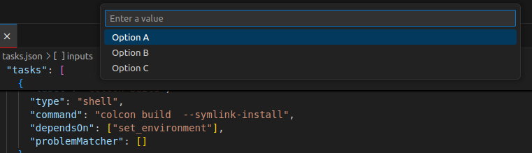
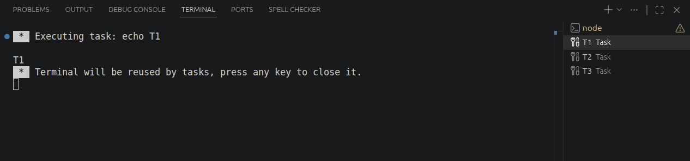
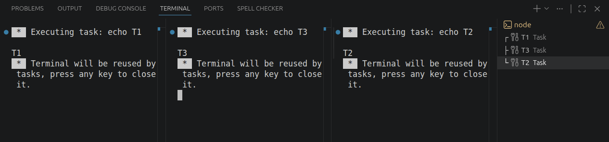

VSCode Tasks
VS Code tasks automate repeatable commands such as building, testing, formatting,
starting development services, or opening a prepared terminal layout. Workspace
tasks are normally stored in .vscode/tasks.json, so they can be committed and
shared with the rest of the project.
Open the Command Palette and use:
- Tasks: Configure Task to create or edit
tasks.json. - Tasks: Run Task to select and run a task.
- Tasks: Run Build Task to run the default build task.
- Tasks: Terminate Task to stop a running task.
Basic task
| .vscode/tasks.json | |
|---|---|
Important fields:
| Field | Purpose |
|---|---|
label |
Name shown by Tasks: Run Task and used by dependsOn |
type |
shell uses a shell; process starts an executable directly |
command |
Program or shell command to run |
args |
Arguments passed as separate values, avoiding one long command string |
options.cwd |
Working directory for the task |
options.env |
Environment variables added or overridden for the task |
problemMatcher |
Parses compiler or tool output into VS Code problems |
group |
Assigns a task to the build or test group |
presentation |
Controls terminal creation, focus, reveal, reuse, and grouping |
Prefer args over embedding every argument in command. This makes quoting
clearer and usually behaves more consistently across platforms.
Inputs
Inputs provide a way to get user-defined values before running a task.
- promptString
- pickString
- command
promptString
pickString

Multiple terminals
A compound task can start several child tasks. Multiple dependencies run in parallel by default.

Giving the child tasks the same presentation.group places
their terminals in split panes within one terminal group.
Run Tasks: Run Task → Start all services. VS Code starts the three child tasks at the same time and shows them as split terminals.

Background task readiness
An empty problemMatcher does not tell VS Code when a background service is
ready. If another task must wait for a server or watcher, configure a
background problem matcher with beginsPattern and endsPattern.
Run tasks in sequence
Dependencies run in parallel unless the compound task sets
"dependsOrder": "sequence":
Every task in the sequence must finish before the next one starts. A long-lived background task therefore needs a background problem matcher that reports when the task is ready.
Reuse or separate terminals
Useful presentation settings include:
| Setting | Common values | Effect |
|---|---|---|
reveal |
always, silent, never |
When the terminal panel is shown |
focus |
true, false |
Whether the task terminal receives keyboard focus |
panel |
shared, dedicated, new |
Reuse one panel, reuse per task, or create a new panel |
group |
Any string | Tasks with the same value appear as split panes |
clear |
true, false |
Clear the terminal before running |
showReuseMessage |
true, false |
Show or hide the terminal reuse message |
Useful variables
Variables keep tasks portable between machines and workspaces:
Common variables include ${workspaceFolder}, ${relativeFile},
${fileBasename}, ${selectedText}, ${env:NAME}, and ${config:setting}.